A collection of
sources of inspiration
To achieve order, first you need to visit chaos.
Exploration is most fun, and it never ends!
Here are some of the visuals, ideas, designs I
have liked, and taken into account. Also some
of the notes I write to myself, in case they get
lost elsewhere. It is utterly important to be
open to new arts, new insights, new talents
, articles, formats… It’s about learning,
processing, about feeding your creativity, so it
can grow in depth and variety and return its
own great ideas.

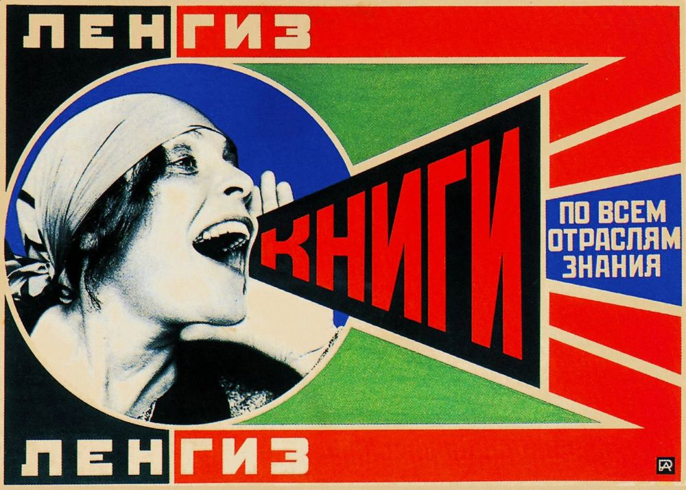
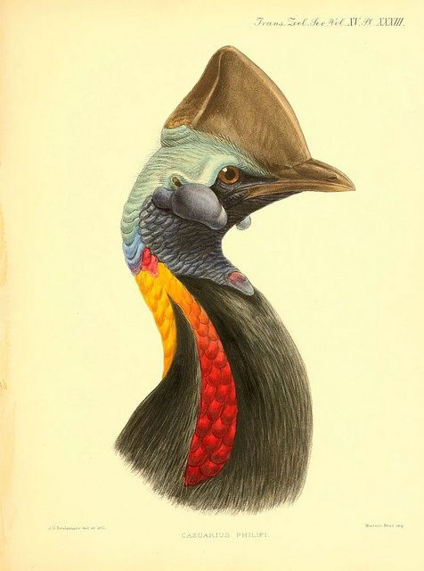

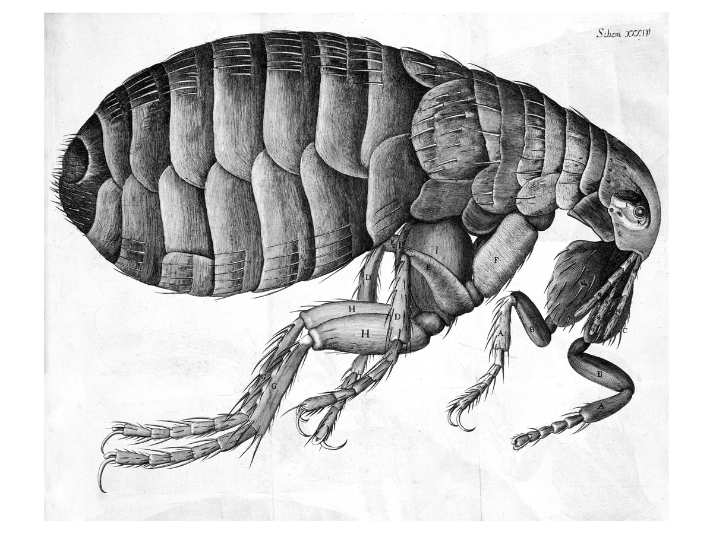
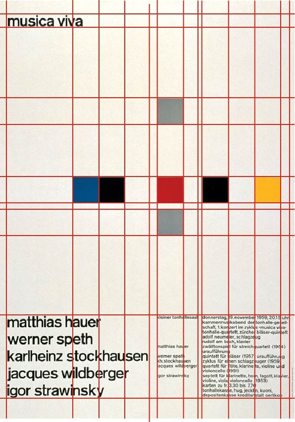
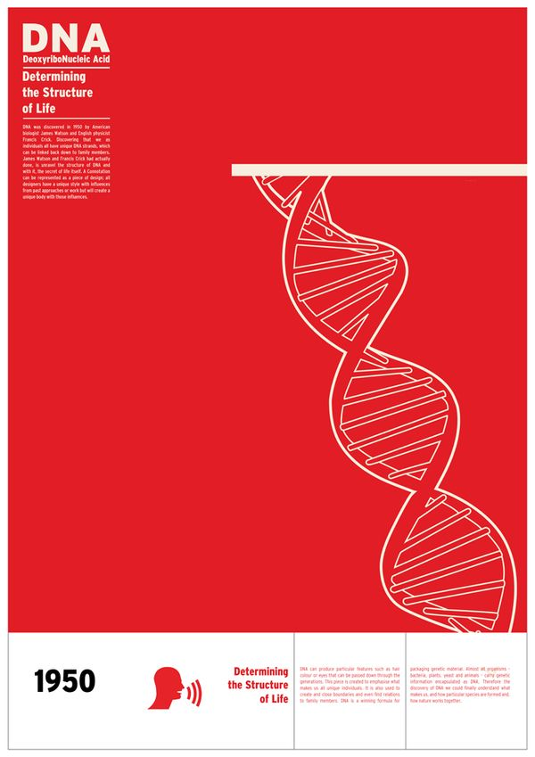

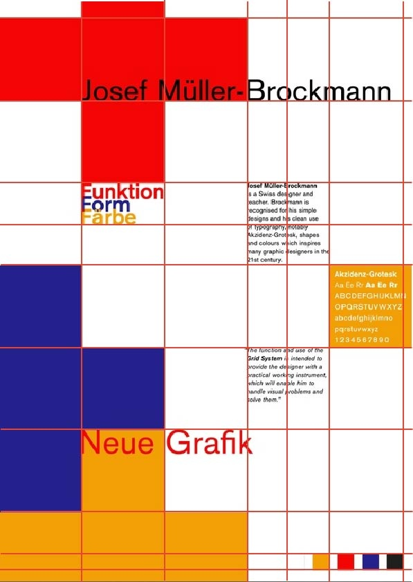
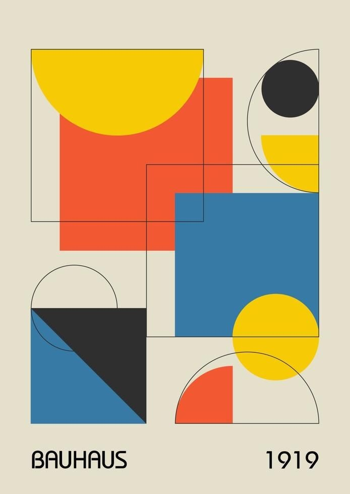
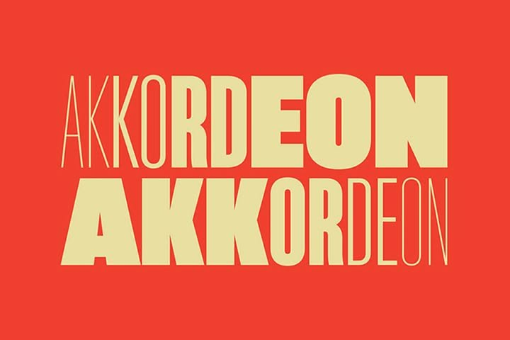
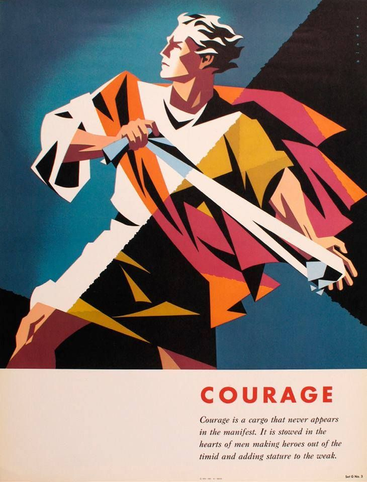
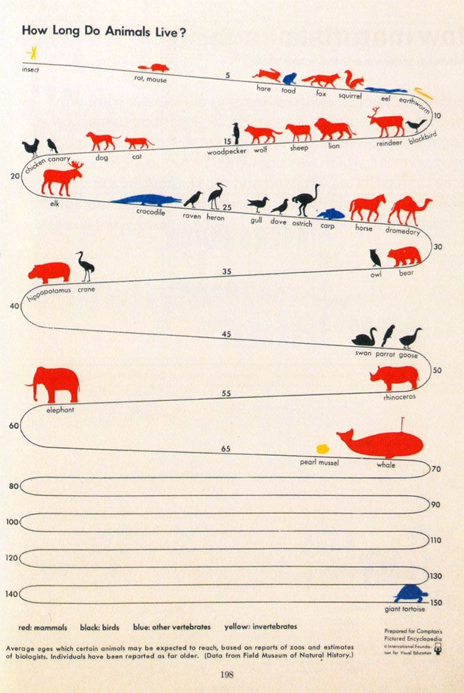
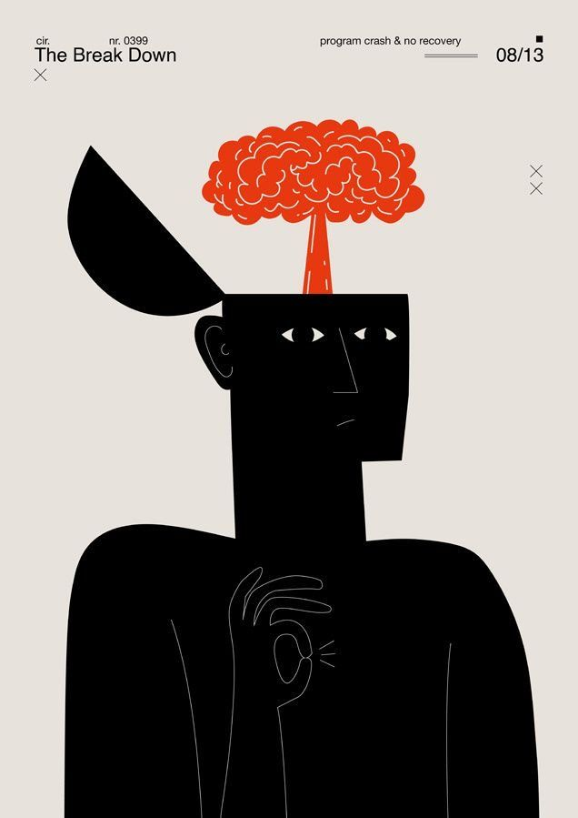
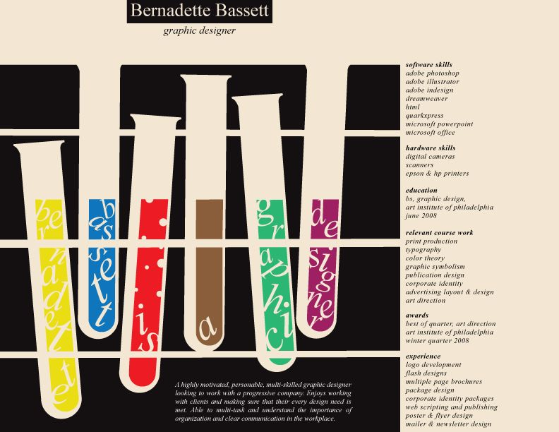
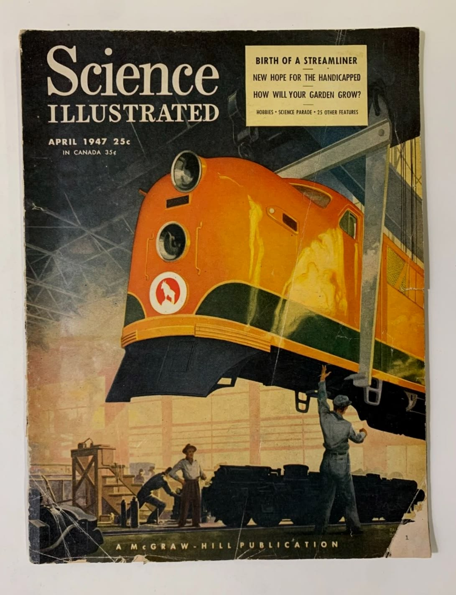